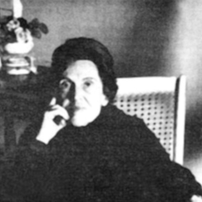

Muerte por alacrán Armonía Somers
Julie Laurent
2021
Unos datos biográficos
Armonía Somers
Armonía Somers en algunas palabras
Armonía Liropeya Etchepare Locino, más conocida como Armonía Somers nació en Pando, el 7 de octubre de 1914 y murió en Montevideo el 1 de marzo de 1994. Fue la hija mayor de un comerciante anarquista y anticlerical, librepensador, Pedro Etchepare, y una madre muy católica, María Judith Locino.
Acerca de su primera novela
Su primera novela se llevó al público en 1950, La mujer desnuda, acogida por la crítica de manera muy escandalosa no sólo por su audaz contenido sexual sino además por el misterio de la identidad del autor.
Publicación de obras
- De miedo en miedo en 1966
- El derrumbamiento en 1953
- La calle del viento norte y otros cuentos en 1963
- Muerte por alacrán en 1978
- Tríptico darwiniano en 1982
- Viaje al corazón del día en 1986
- Sólo los elefantes encuentran mandrágora, su obra maestra, en 1982
Su generación
Si el esquema generacional permitiera decir que la autora pertenece a la Generacion del 45, Armonía Somers tiene más en común, por su orientación artística con la siguiente "Generación de la Crisis".
Estilo de escritura
Estilo
Hay una larga discusión sobre si la obra de Somers pertenece a la literatura fantástica o no; en todo caso, la atmósfera macabra de sus textos impregnados de violencia y erotismo, así como su estructura fragmentaria y los elementos intertextuales que contienen, hacen que la lectura de sus novelas y cuentos no sea fácil
Escritura
Su escritura es innovadora, subversiva e irreverente, pero al mismo tiempo contiene elementos arquetípicos y alegóricos, alusiones a la Biblia y elementos oníricos y surrealistas.
Recepción de la obra
Recepción internacional
A la recepción internacional, la obra de Armonía Somers va a ser asociada con la literatura del Conde de Lautréamont.En 1978 Somers publica un tomo de cuentos bajo el título de Muerte por alacrán que contiene algunos textos nuevos, además de otros reeditados.
La crítica de Benedetti
Mario Benedetti dice: "Muerte por alacrán, administra su dosis de terror con un ritmo y una precisión notables; es un título que no podrá faltar en ninguna antología del cuento uruguayo."
Muerte por alacrán
Lecturas
Lectura auditiva
Resumen del cuento
Cuenta la historia de dos repartidores que arrojan un escorpión como un paquete envenenado en una propiedad y un mayordomo que se pasa el día buscándolo. Su búsqueda lo lleva a sumergirse en los recuerdos de la familia, a través de objetos privados de la familia. Esta irrupción permitirá mostrar los vicios y secretos de la familia. El equilibrio de propiedad, por lo tanto de la familia, pero también de las relaciones se ve amenazado por la simple aparición del escorpión o incluso por su simple pronunciación ya que, irónicamente, el escorpión estará con los repartidores en el camión.
Propuesta de análisis
Narrativa y trama temporal
- Relato en tercera persona
- Narrador omnisciente
- Sin indicación de espacio o tiempo
- La línea de tiempo sigue el hilo de la narración
- Los recuerdos del mayordomo abren momentos de analepsis
El escorpión
La muerte del escorpión se cierne sobre todos los personajes, como presagia el título.
El escorpión permanece invisible en el cuento.
La amenaza de muerte encierra a los personajes en una especie de locura
La familia
Familia europeana:
- Indicación por los nombres
- indicación por las costumbres
Representan a la élite y el poder
La crítica social
Descripción de los eventos y lugares mediante los hombres marginados.
La autora describe una familia adinerada pero llena de vicios
Deconstrucción de los stereotipos patriarcales
Revelación de la hipocresía y demostrar que ninguno de los miembros lleva una vida moralmente respetable.
La crítica social - 2
el escorpión encarna una alegoría que ataca alpatriarcado
La familia pierde su brillo
Elementos de argumentación
Somers subraya el antagonismo entre las clases sociales, en particular a través del juego de oposiciones entre interior y exterior; la descripción del césped subraya que el espacio exterior de la casa, en el que actuan los repartidores, está desnaturalizado, imperfecto pero socialmente aceptable
Elementos de argumentación - 2
Las descripciones de la casa Günter muestran una residencia grande y muy conveniente, enfatizando la diferencia de clase social. Si la casa a veces parece un castillo fortificado, la amenaza surge dentro de la casa, a causa del escorpión.
Elementos de argumentación - 3
Los repartidores, que abren y cierran el cuento de la misma manera, no dejan de criticar a estos ricos terratenientes y desean su muerte
Accentuación de la diferenciación social
los repartidores no sienten compasión, ni por la familia, ni por el mayordomo. Podemos notar que los conductores son anónimos, identificados por el servicio que brindan mientras que los dos sirvientes, Felipe y Marta la cocinera, tienen nombre pero no apellidos y no parecen tener una vida fuera de la mansión
La búsqueda del escorpión
Permite a Felipe interferir en la vida íntima de sus amos, recorre todas las habitaciones de la casa y sus respectivos dormitorios
La búsqueda del escorpión - 2
El cuarto de la adolescente:
- Se complace en violar el espacio íntimo dela joven
- Aprovechar la oportunidad para leer su diario
- “deseos ocultos” del mayordomo
La búsqueda del escorpión - 3
El cuarto de Gunter
- Encuentra documentos privados
- El suicidio del amante de su esposa
- Hombre manipulador y poderoso
La búsqueda del escorpión - 4
El cuarto de su esposa
- Aprovecha para arrojar en su cama los documentos que encontró en la caja fuerte de su esposo
El final del cuento
Un solo párrafo, el lector espera el ataque del escorpión
El lector ve todo los personajes: Familia, mayordomo, repartidores
Pasamos a la visón del escorpión en el camión
Reescritura del cuento
La creación de un guión cinematográfico
Después de la publicación de su cuento, la autora tomó la desición, crear a partir de este un guión cinematográfico
La creación de un guión cinematográfico - 2
De estas restricciones aparece un nuevo estilo con nuevas escenas, por lo tanto la historia sigue siendo la misma.
La creación de un guión cinematográfico - 3
Esta obra se va a centrar mas en un solo recuerdo del mayordomo y en la personalidad manipuladora de Gunter.

Este obra está bajo una licencia de Creative Commons Reconocimiento-NoComercial-CompartirIgual 4.0 Internacional